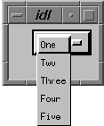

The WIDGET_DROPLIST function creates “droplist” widgets, which display a single entry from a list of options. A droplist widget displays a text field and an arrow button. Selecting either the text field or the button reveals a list of options from which to choose. When the user selects a new option from the list, the list disappears and the text field displays the currently selected option. This action generates an event containing the index of the selected item, which ranges from 0 to the number of elements in the list minus one.
|
 |
Note: The WIDGET_COMBOBOX function creates a similar widget that optionally allows users to edit the text displayed by the droplist. The combobox widget is intended to replace the droplist widget; new code should use WIDGET_COMBOBOX rather than WIDGET_DROPLIST.
Note: The appearance of the droplist widget differs on Motif and Windows platforms. Under Windows, the droplist widget looks the same as the ComboBox widget; under Motif, it appears as shown in the figure above.
Result = WIDGET_DROPLIST( Parent [, / DYNAMIC_RESIZE ] [, EVENT_FUNC = string ] [, EVENT_PRO = string ] [, / FLAT ] [, FONT = string ] [, FRAME = value ] [, FUNC_GET_VALUE = string ] [, GROUP_LEADER = widget_id ] [, KILL_NOTIFY = string ] [, / NO_COPY ] [, NOTIFY_REALIZE = string ] [, PRO_SET_VALUE = string ] [, RESOURCE_NAME = string ] [, SCR_XSIZE = width ] [, SCR_YSIZE = height ] [, / SENSITIVE ] [, TAB_MODE = value ] [, TITLE = string ] [, / TRACKING_EVENTS ] [, UNAME = string ] [, UNITS ={0 | 1 | 2}] [, UVALUE = value ] [, VALUE = value ] [, XOFFSET = value ] [, XSIZE = value ] [, YOFFSET = value ] [, YSIZE = value ] )
The returned value of this function is the widget ID of the newly-created droplist widget.
The widget ID of the parent widget for the new droplist widget.
Note: This keyword is quietly ignored under UNIX. On UNIX systems, droplists do not change their size after being realized.
Set this keyword to create a widget that resizes itself to fit its new value whenever its value is changed. Note that this keyword does not take effect when used with the SCR_XSIZE, SCR_YSIZE, XSIZE, or YSIZE keywords. If one of these keywords is also set, the widget will be sized as specified by the sizing keyword and will never resize itself dynamically.
A string containing the name of a function to be called by the WIDGET_EVENT function when an event arrives from a widget in the widget hierarchy rooted at the newly-created widget.
A string containing the name of a procedure to be called by the WIDGET_EVENT function when an event arrives from a widget in the widget hierarchy rooted at the newly-created widget.
Set this keyword to draw the widget with a “flat” appearance, rather than with the default three-dimensional appearance.
Note: On Microsoft Windows platforms, droplist widgets always have a “flat” appearance, and this keyword is quietly ignored.
The name of the font to be used by the widget. The font specified is a “device font” (an X Windows font on Motif systems; a TrueType or PostScript font on Windows systems). See Using Device Fonts for details on specifying names for device fonts. If this keyword is omitted, the default font is used.
Note: On Microsoft Windows platforms, if FONT is not specified, IDL uses the system default font. Different versions of Windows use different system default fonts; in general, the system default font is the font appropriate for the version of Windows in question.
The value of this keyword specifies the width of a frame in units specified by the UNITS keyword (pixels are the default) to be drawn around the borders of the widget. Note that this keyword is only a hint to the toolkit, and may be ignored in some instances.
A string containing the name of a function to be called when the GET_VALUE keyword to the WIDGET_CONTROL procedure is called for this widget. Using this technique allows you to change the value that should be returned for a widget. Compound widgets use this ability to define their values transparently to the user.
The widget ID of an existing widget that serves as “group leader” for the newly-created widget. When a group leader is killed, for any reason, all widgets in the group are also destroyed.
A given widget can be in more than one group. The WIDGET_CONTROL procedure can be used to add additional group associations to a widget. It is not possible to remove a widget from an existing group.
Set this keyword to a string that contains the name of a procedure to be called automatically when the specified widget dies. Each widget is allowed a single such “callback” procedure. It can be removed by setting the routine to an empty string ( '' ).
The callback routine is called with the widget identifier as its only argument. At that point, the widget identifier can only be used with the WIDGET_CONTROL procedure to get or set the user value. All other requests that require a widget ID are disallowed for the target widget. The callback is not issued until the WIDGET_EVENT function is called.
Usually, when setting or getting widget user values, either at widget creation or using the SET_UVALUE and GET_UVALUE keywords to WIDGET_CONTROL, IDL makes a second copy of the data being transferred. Although this technique is fine for small data, it can have a significant memory cost when the data being copied is large.
If the NO_COPY keyword is set, IDL handles these operations differently. Rather than copy the source data, it takes the data away from the source and attaches it directly to the destination. This feature can be used by compound widgets to obtain state information from a UVALUE without all the memory copying that would otherwise occur. However, it has the side effect of causing the source variable to become undefined. On a “set” operation (using the UVALUE keyword to WIDGET_DROPLIST or the SET_UVALUE keyword to WIDGET_CONTROL ), the variable passed as value becomes undefined. On a “get” operation (GET_UVALUE keyword to WIDGET_CONTROL ), the user value of the widget in question becomes undefined.
Set this keyword to a string that contains the name of a procedure to be called automatically when the specified widget is realized. This callback occurs just once (because widgets are realized only once). Each widget is allowed a single such “callback” procedure. It can be removed by setting the routine to an empty string ( '' ). The callback routine is called with the widget ID as its only argument.
A string containing the name of a procedure to be called when the SET_VALUE keyword to the WIDGET_CONTROL procedure is called for this widget. See the description of the PRO_SET_VALUE keyword to WIDGET_CONTROL for information on using this keyword.
A string containing an X Window System resource name to be applied to the widget. See RESOURCE_NAME for a complete discussion of this keyword.
Set this keyword to the desired “screen” width of the widget, in units specified by the UNITS keyword (pixels are the default). In many cases, setting this keyword is the same as setting the XSIZE keyword.
Set this keyword to the desired “screen” height of the widget, in units specified by the UNITS keyword (pixels are the default). In many cases, setting this keyword is the same as setting the YSIZE keyword.
Set this keyword to control the initial sensitivity state of the widget.
If SENSITIVE is zero, the widget becomes insensitive. If nonzero, it becomes sensitive. When a widget is sensitive, it has normal appearance and can receive user input. For example, a sensitive button widget can be activated by moving the mouse cursor over it and pressing a mouse button. When a widget is insensitive, it indicates the fact by changing its appearance, looking disabled, and it ignores any input.
Sensitivity can be used to control when a user is allowed to manipulate the widget. Note that some widgets do not change their appearance when they are made insensitive, but they cease generating events.
After creating the widget hierarchy, you can change the sensitivity state using the SENSITIVE keyword with the WIDGET_CONTROL procedure.
Set this keyword to one of the values shown in the table below to determine how the widget hierarchy can be navigated using the Tab key. The TAB_MODE setting is inherited by lower-level bases and child widgets from the parent WIDGET_BASE unless it is explicitly set on an individual widget. If the TAB_MODE value of the widget differs from that of the base, the setting on the widget will be respected when the widget has focus. For example, if a base does not support tabbing, but an individual child widget does support tabbing, this functionality will be enabled when the child widget has focus.
Note: It is not possible to tab to disabled (SENSITIVE=0) or hidden (MAP=0) widgets.
Valid settings are:
|
0 |
Disable navigation onto or off of the widget. This is the default unless the TAB_MODE has been set on a parent base. Child widgets automatically inherit the tab mode of the parent base as described in Inheriting the TAB_MODE Value . |
|
1 |
Enable navigation onto and off of the widget. |
|
2 |
Navigate only onto the widget. |
|
3 |
Navigate only off of the widget. |
Note: In widget applications on the UNIX platform, the Motif library controls what widgets are brought into and released from focus using tabbing. The TAB_MODE keyword value is always zero, and any attempt to change it is ignored when running a widget application on the UNIX platform. Tabbing behavior may vary significantly between UNIX platforms; do not rely on a particular behavior being duplicated on all UNIX systems.
Once a WIDGET_DROPLIST widget receives focus through tabbing, additional navigation capabilities depend upon the platform as follows:
On Windows – droplist widgets can receive and lose focus through tabbing.
On UNIX — the Motif library controls tabbing functionality.
After creating the widget hierarchy, you can change tabbing support using the WIDGET_CONTROL procedure’s TAB_MODE keyword, or query a widget’s support for tabbing using the WIDGET_INFO procedure’s TAB_MODE keyword.
See Tabbing in Widget Applications for usage details and examples.
Set this keyword to a string to be used as the title for the droplist widget.
Note: You can use language catalogs to internationalize this value with strings in particular languages.
Set this keyword to cause widget tracking events to be issued for the widget whenever the mouse pointer enters or leaves the region covered by that widget. For the structure of tracking events, see TRACKING_EVENTS in the documentation for WIDGET_BASE.
Set this keyword to a string that can be used to identify the widget in your code. You can associate a name with each widget in a specific hierarchy, and then use that name to query the widget hierarchy and get the correct widget ID.
To query the widget hierarchy, use the WIDGET_INFO function with the FIND_BY_UNAME keyword. The UNAME should be unique to the widget hierarchy because the FIND_BY_UNAME keyword returns the ID of the first widget with the specified name.
Set this keyword to specify the units used when supplying measurements or position values. Set UNITS equal to 0 (zero) to specify that all measurements are in pixels (this is the default), to 1 (one) to specify that all measurements are in inches, or to 2 (two) to specify that all measurements are in centimeters. This keyword does not change the units used in a widget event structure or in most of the fields of the geometry structure returned by WIDGET_INFO.
The “user value” to be assigned to the widget.
Each widget can contain a user-specified value of any data type and organization. This value is not used by the widget in any way, but exists entirely for the convenience of the IDL programmer. This keyword allows you to set this value when the widget is first created.
If UVALUE is not present, the widget’s initial user value is undefined.
The initial value setting of the widget. The value of a droplist widget is a scalar string or array of strings that contains the text of the list items—one list item per array element. List widgets are sized based on the length (in characters) of the longest item specified in the array of values for the VALUE keyword.
Note: You can use language catalogs to internationalize this value with strings in particular languages.
The horizontal offset of the widget in units specified by the UNITS keyword (pixels are the default) relative to its parent.
Specifying an offset relative to a row or column major base widget does not work because those widgets enforce their own layout policies. This keyword is primarily of use relative to a plain base widget. Note that it is best to avoid using this style of widget programming.
The desired width of the droplist widget area, in units specified by the UNITS keyword (pixels are the default). Most widgets attempt to size themselves to fit the situation. However, if the desired effect is not produced, use this keyword to override it. This keyword does not control the size of the droplist button or of the dropped list. Instead, it controls the size “around” the droplist button and, as such, is not particularly useful.
The vertical offset of the widget in units specified by the UNITS keyword (pixels are the default) relative to its parent. This offset is specified relative to the upper left corner of the parent widget.
Specifying an offset relative to a row or column major base widget does not work because those widgets enforce their own layout policies. This keyword is primarily of use relative to a plain base widget. Note that it is best to avoid using this style of widget programming.
The desired height of the widget, in units specified by the UNITS keyword (pixels are the default). Most widgets attempt to size themselves to fit the situation. However, if the desired effect is not produced, use this keyword to override it. This keyword does not control the size of the droplist button or of the dropped list. Instead, it controls the size “around” the droplist button and, as such, is not particularly useful.
A number of keywords to the WIDGET_CONTROL procedure affect the behavior of droplist widgets. In addition to those keywords that affect all widgets, the following are particularly useful: DYNAMIC_RESIZE , GET_VALUE , SET_DROPLIST_SELECT , SET_VALUE .
A number of keywords to the WIDGET_INFO function return information that applies specifically to droplist widgets. In addition to those keywords that apply to all widgets, the following are particularly useful: DROPLIST_NUMBER , DROPLIST_SELECT , DYNAMIC_RESIZE , STRING_SIZE .
Pressing the mouse button while the mouse cursor is over an element of a droplist widget causes the widget to change the label on the droplist button and to generate an event. The event structure returned by the WIDGET_EVENT function is defined by the following statement:
{ WIDGET_DROPLIST, ID:0L, TOP:0L, HANDLER:0L, INDEX:0L }
The first three fields are the standard fields found in every widget event. INDEX returns the index of the selected item. This can be used to index the array of names originally used to set the widget’s value.
Note: Platform-specific UI toolkits behave differently if a droplist widget has only a single element. On some platforms, selecting that element again does not generate an event. Events are always generated if the list contains multiple items.
|
4.0 |
Introduced |
|
6.1 |
Added TAB_MODE keyword |
|
7.1 |
Added FLAT keyword |